SIMPLIFYING CAMERA WORKFLOWS
Improving the editor tool platform for cinemachine cameras users to craft beautiful and stunning shots easily
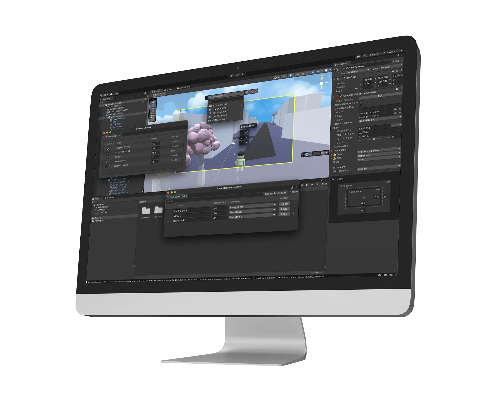
Overview
Cinemachine is a highly regarded package within the Unity Editor, utilized by approximately 300,000 users, that enhances storytelling through its advanced camera-related tools. This Emmy-award winning suite provides codeless, dynamic and smart cameras that capture the best shots based on scene composition and interaction, enabling users to fine-tune, experiment and create captivating camera behaviors in real-time. Cinemachine is widely used by game developers and filmmakers to create stunning shots in their projects, with the animation film "Baymax Dreams" being a prime example of its full potential.
The problem
Cinemachine was acquired by Unity in 2016 and seamlessly integrated into the platform. Despite being one of the most widely used tools in Unity, it received a significant amount of feedback from users regarding its user experience and workflows. Cinemachine lacked appropriate UX design patterns , visual consistency and its UX / UI components were way different from Unity editor. Despite some previously reported design challenges, Cinemachine remains popular among users due to its powerful capabilities.
My role
As the lead designer for Cinemachine, I was tasked with simplifying the camera workflows and inspector panel. To gain a deep understanding of user needs and pain points, I conducted surveys and interviews with the support of a UX researcher. Utilizing the insights gathered from the research, I led the design of various workflows to address the identified problems. I collaborated closely with the graphic designer to create assets and with the engineering team to ensure the design was implemented correctly. Through A/B testing, I validated my design solutions and worked with the Unity Editor design system team to maintain design consistency throughout the project.
Design problems
01
Enable creators modify camera parameters easily though camera handles
Our research indicated that creators required a more efficient method for adjusting camera properties. The current editor tool posed a challenge for users as they had to frequently switch between the inspector panel and scene window while adjusting the primary camera properties such as focal length, far clip-near clip plane, follow offset, and tracked object offset. This became increasingly difficult when dealing with multiple cameras and the need to make quick adjustments to their properties.
PAIN POINT 1
Time consuming
The current process of selecting a camera from the hierarchy panel and then navigating to the inspector panel to adjust its properties is time-consuming, especially when dealing with multiple cameras. This exacerbates the pain point for creators and slows down their workflow.
PAIN POINT 2
Not easily accessible
The inspector panel for Cinemachine is cluttered with numerous properties that are organized randomly, making it difficult for users to locate the necessary adjustments even after selecting a camera from the hierarchy panel.
PAIN POINT 3
Inconsistent
Upon acquisition by Unity, Cinemachine did not take advantage of the editor design system to update its design components, resulting in an inconsistent look and feel compared to other Unity tools and causing confusion among users.
OPPORTUNITY STATEMENT
The current process of adjusting camera properties in Cinemachine is seen as time-consuming and tiring by gamers. By leveraging the Unity design system and overlays, there is an opportunity to reduce the time spent adjusting cameras, enhancing the overall experience for creators.
Ideation
During the ideation stage, I shared my ideas with multiple teams within Unity who were working on different parts of the editor. After numerous brainstorming sessions, I was inspired by the work of the Light and Overlays teams. By incorporating both technologies, I was able to create a more effective solution for adjusting camera properties in Cinemachine.
The Light team created handles for adjusting common light properties, as demonstrated in the video on the left. Meanwhile, the Overlays team designed floating screen overlays that can be used for different tools and situations. These overlays can be contextual, appearing only when a target object is selected.
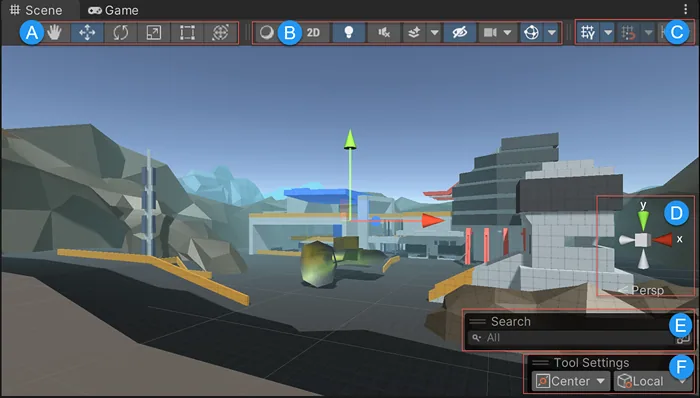
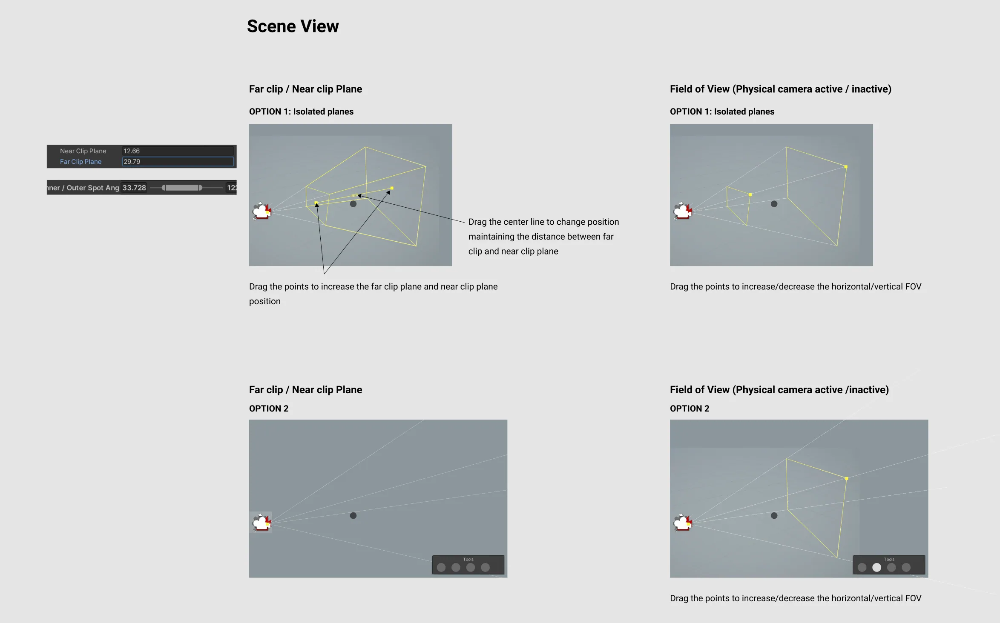
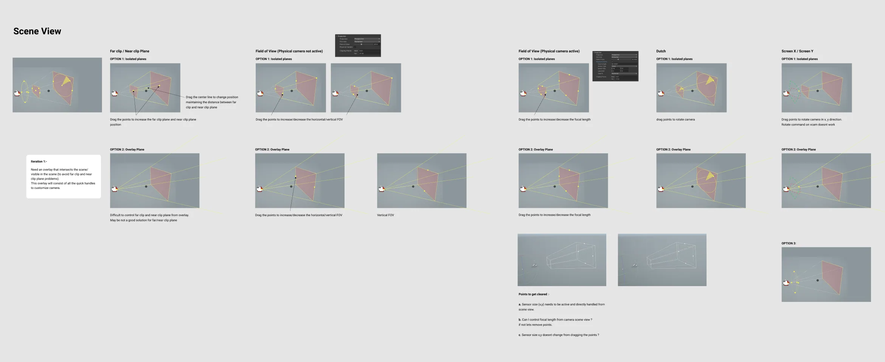
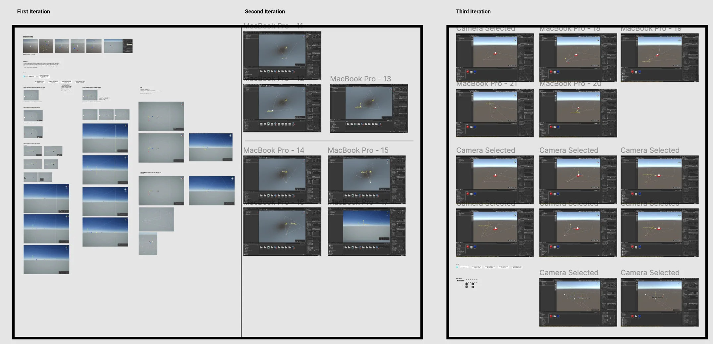
Final designs
After several iterations, I came up with a solution which involved quick handles on camera to modify properties and an overlay which shows up as soon as any camera is selected in scene view or heirarchy panel. The overlay shows all the common tools used by creators while adjusting properties.
02
Enable creators modify scene composition while looking through the eye of camera.
Disney, one of our clients, encountered challenges while utilizing Cinemachine. In shot composition, they often prefer to view the scene from the camera's perspective to accurately capture or exclude elements and navigate through the scene composition. However, Cinemachine lacked the capability to provide these features, making the shot composition process time-consuming and inefficient for users.
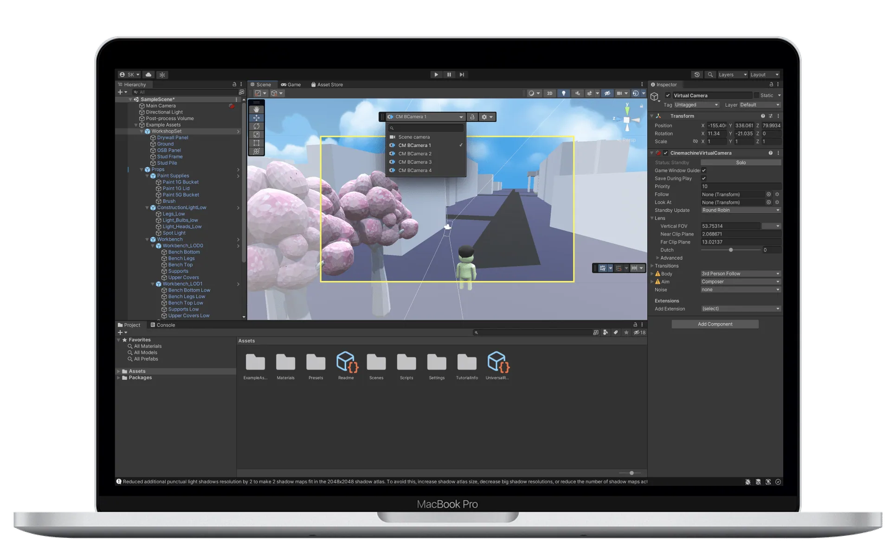
How do creators view scene composition from camera perspective in the current scenario ?
Currently creators use 'Align view to selected' option to align scene window camera to selected camera view. However this works for observing a patrticular scene composition, it doesnt allow you to make changes to the camera properties. Also the process is too time consuming, tiring and requires creators to go back and forth and increases the number of clicks.
Design framework
After several discussions with users and the Disney team, we came to the realization that the new design should be built on following framework and incorporate specific design principles.
Intuitive and joyful
We aim to deliver a seamless and satisfying experience to our users, fostering a sense of excitement and discovery when they interact with the new feature.
Persistent and easily scalable
Our goal is to create a readily accessible and scalable system that provides users with more information and versatility when composing shots, including incorporating other game objects like lights and planes.
In camera modification
Our goal is to simplify the camera modification process for users, allowing them to adjust camera properties and modify scene composition in real-time, without having to constantly switch back and forth between the scene window and inspector panel.
Enhance not hinder
Cinemachine aims to replicate the familiar camera workflows used in film sets to minimize the learning curve and enhance the creators' ability to produce captivating shots.
Layout explorations
During the ideation stage, I shared my ideas with multiple teams within Unity who were working on different parts of the editor. After numerous brainstorming sessions, I was inspired by the work of the Light and Overlays teams. By incorporating both technologies, I was able to create a more effective solution for adjusting camera properties in Cinemachine.
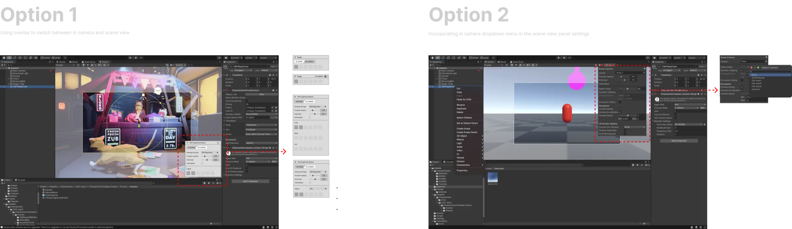
Final design
After conducting thorough evaluations with Unity's creative team to assess the effectiveness of my designs in solving their challenges, multiple rounds of refinements were performed. Ultimately, the decision was made to utilize overlays, which would provide a persistent display of all cameras used in Unity, serving as an efficient single tool for seamlessly switching between cameras.
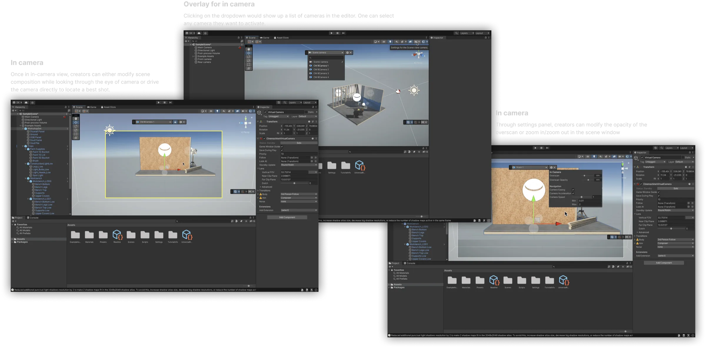
Driving the camera
Creators greatly appreciate the ability to maneuver the camera through their scene compositions, enabling them to bring to life visions that were previously unattainable. With the implementation of the in-camera view feature, we effectively reduced cognitive load on our users while empowering them to create stunning shots.
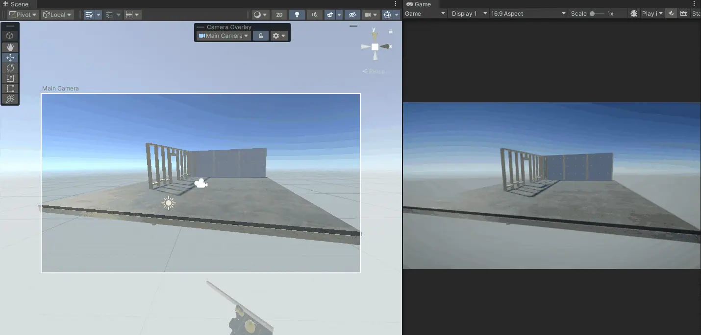
03
Enable creators to adjust camera damping easily
Camera damping / game window guides are essential parts of Cinemachine. They help control camera movements and keep them within a certain area on the screen while following a target object. Creators adjust the guides for each camera based on the shot needs. Currently, adjusting the guides is time-consuming and difficult, either through direct screen modification or using inspector panel sliders.
Research
I conducted survey with unity internal users and 7 in-person interviews with Unity creators to gather their feedback on game window guides, understand different use cases, and learn about their expectations from Cinemachine. I gathered several UX/UI problems along with issues in how this feature is branded.
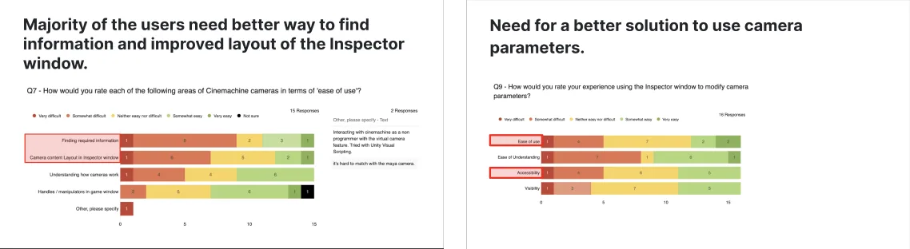
Pain points
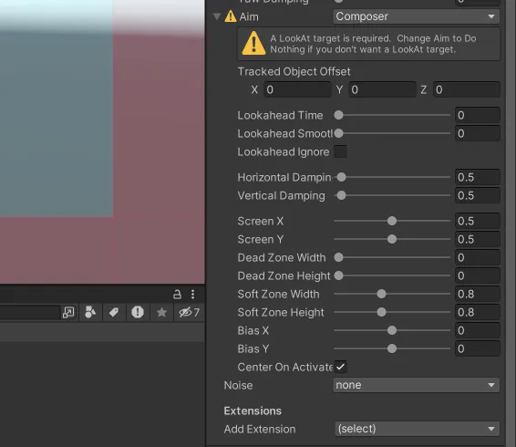
PAIN POINT 1
Inefficient UX components
Window guides in the inspector panel lacks appropriate UX pattern (sliders) causing confusion and time-consuming, repetitive adjustments to achieve a desired damping.
PAIN POINT 2
Frustrating & unintuitive
Modifying window guides using sliders is complicated and touch regions for guide in the game window are inaccurate, causing frustration for users during camera setup.
PAIN POINT 3
Cluttered & Incomprehensible
User interviews revealed confusing terminology and units in the inspector panel for window guides, leading to reliance on manuals for understanding slider functionality, repetitively.
How might we make game window guides easy to understand and intuitive to use?
Ideation
Through repeated use, I noticed a pattern for adjusting game window guides that could be represented visually. I further iterated it with constant feedback from peers and users to ensure all use cases were addressed.
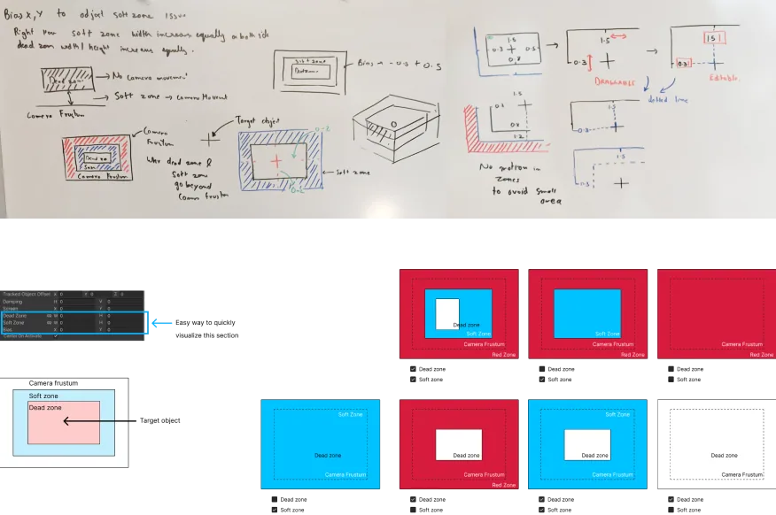
Developing the ideas
After obtaining initial feedback on my early concepts, I meticulously crafted each use case, thoroughly reviewing and troubleshooting potential issues. I collaborated with several creators and the Unity design system team to guarantee consistency, adhere to Unity design guidelines, and effectively address the issues uncovered during my research.
I designed two options: one in which the visual region in the inspector panel is fixed, and adjusting the numbers adjusts the guidelines in the game window. The second option involves the dynamic nature of the visual region, where modifying the visual region in the inspector panel immediately reflects changes in the game window.
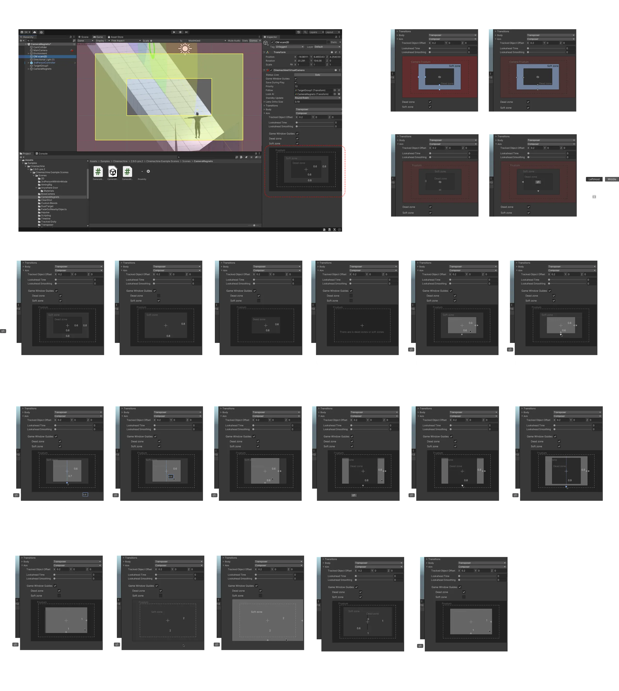
Final design
Following A/B testing with Unity creators, the concept of a static visual representation in the inspector panel and intuitive, quick game window guides was highly favored. The visual representation, combined with screen handles, elevates the overall experience with camera damping and provides users with the flexibility to use both to their advantage.
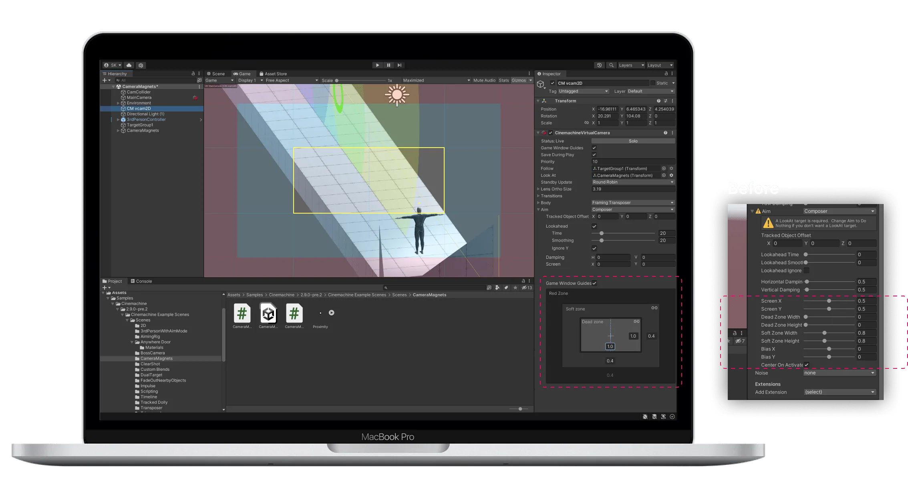
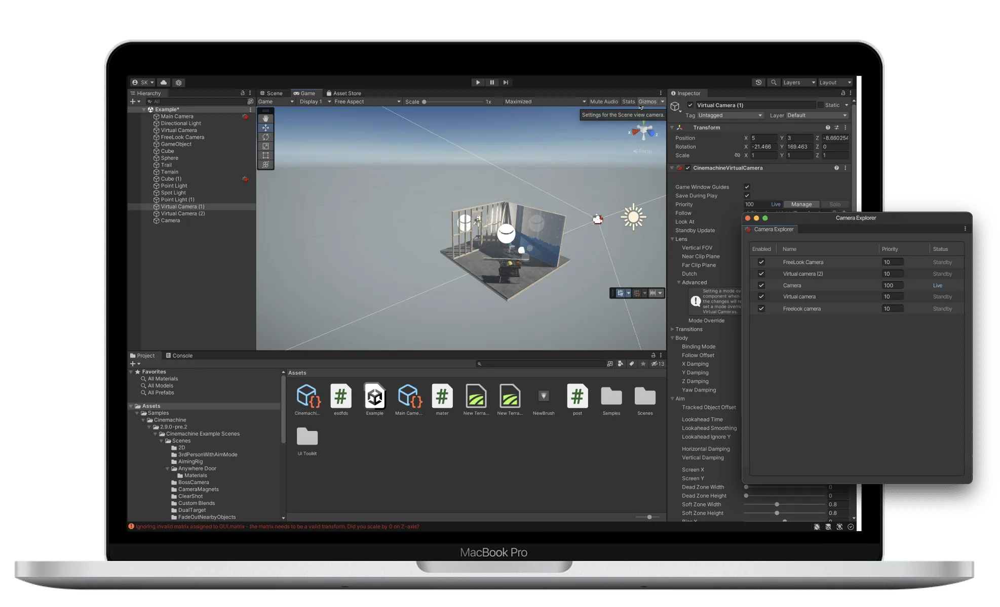
04
Enable creators to organize cameras efficiently
When composing shots, creators utilize multiple cameras in various positions to determine which camera captures the best shot. In instances where multiple cameras are present in the timeline, the most compelling camera is assigned a higher priority number to ensure the clip captured from that camera is always in focus. However, the current setup lacks a clear method of viewing the priority number for all cameras simultaneously, causing a lack of transparency and a time-consuming process.
How do creators prioritize their camera while composing shots?
In the current setup, users are required to individually select each camera in the hierarchy panel to alter their priorities, leading to a time-consuming and confusing process. For large projects with hundreds of cameras, it can be challenging to locate a particular camera with a specific priority. Additionally, the lack of a limit on the maximum number of priorities assigned makes it difficult to determine the highest number when multiple cameras are in use.
Gamers need a more effective way to comprehend and alter camera ranking to enhance efficiency
Final design
After multiple rounds of iteration and brainstorming with engineers, we devised a camera explorer panel that allows creators to view all cameras simultaneously, assign priorities while monitoring the maximum priority number, thereby avoiding confusion and facilitating a faster way to modify all cameras at once. This panel presents us with the chance to include additional camera details in the future, such as camera focal length, far and near clip planes, and other frequently altered camera parameters.